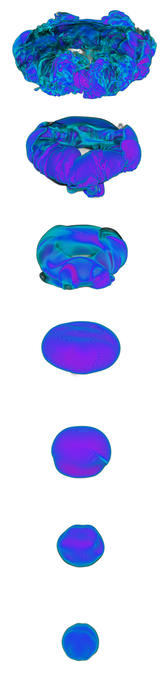
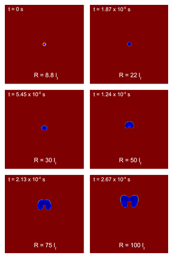
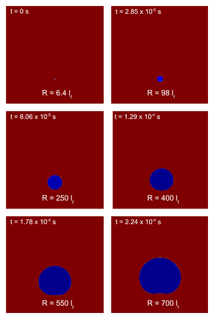

(Zingale, M., Woosley, S. E., Bell, J. B., Day, M. S., & Rendleman, C. A. 2005, Proceedings of SciDAC 2005, Journal of Physics: Conference Series, 16, 405;
Zingale, M. & Dursi, L. J. 2006, ApJ, accepted.)
in collaboration with the CCSE/LBL group and Jonathan Dursi
As a flame bubble buoyantly rises, turbulence and drag compete with the laminar flame speed in determining the shape of the bubble. If the rise velocity is greater than the flame speed, then the bubble will begin to deform, gradually transforming into a toroidal shape (whether or not a hole develops in the center depends on the burning rate).

In the above simulation (density = 2.35 x 107 g/cc), the bubble rise velocity quickly exceeds the laminar flame speed, and as a result, the bubble begins deforming quickly.
At a higher density (4 x 107 g/cc) shown below, the laminar flame speed is much higher and the bubble can reach a much larger radius (measured in terms of laminar flame thicknesses) before deformation sets in.

Ultimately, it is interesting to understand how the bubble fragments. This requires simulations to be done in 3-D. Some work has been done on this already (see the figure on the right), but more is needed in the future.